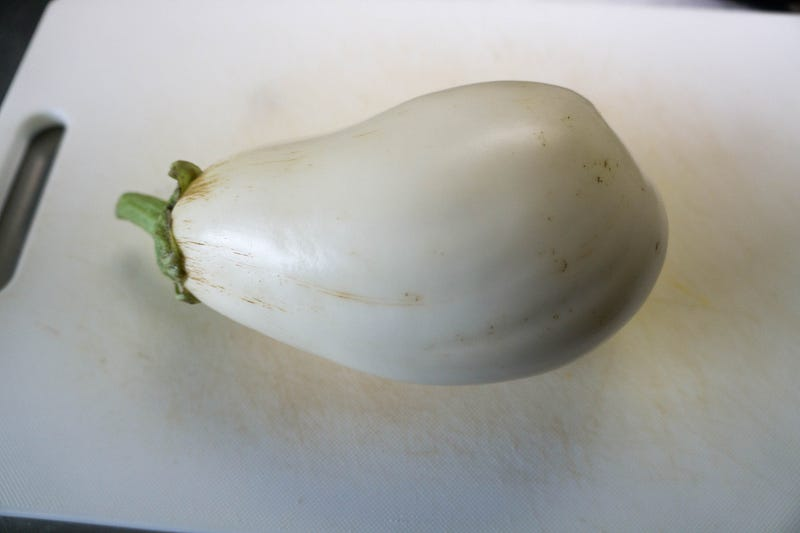
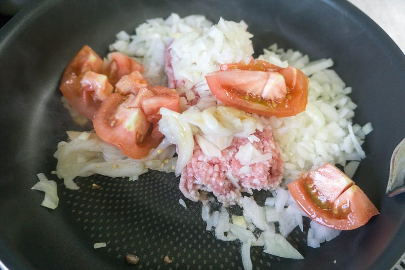
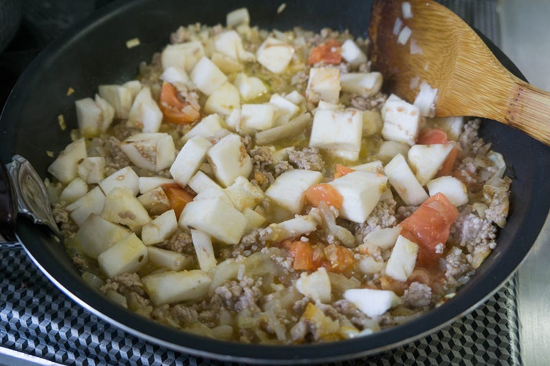
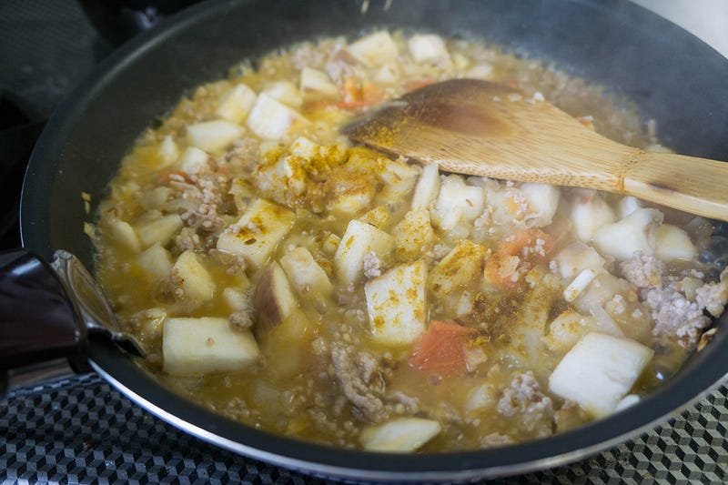
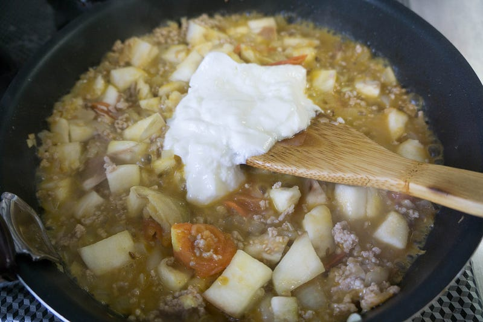
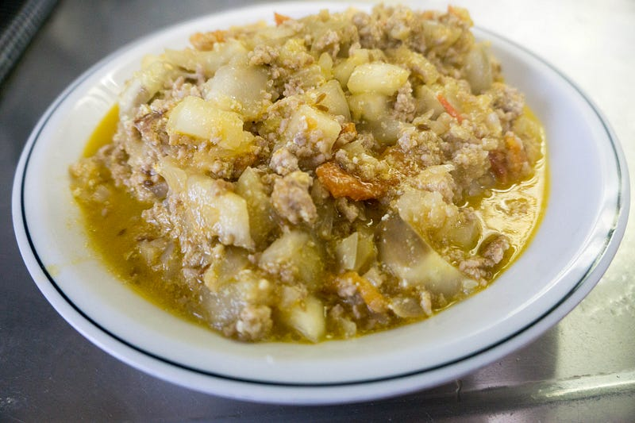

白茄子を調理してみる
白茄子を調理してみる
いつものスーパーで突然白茄子が売っていた。なんかクリーミーでうまい、みたいな文句とともに売られていたので、「これ、なんかトルコ料理っぽくしたらうまいのでは？」と思い、調理してみた。
ちなみに今回低温調理はない。また、作ってみた、ってだけなので、なんのレシピも参考にしておらず、完全に独自の「トルコっぽい」解釈だ。
以下、白茄子。米茄子を白くした感じ。

取りあえずタマネギとトマトを炒めときゃトルコ料理になるだろう、で炒め始める。ここでもうすでにトルコ料理ではなくなるのだが、突然豚挽肉を投入（トルコ料理するなら多分羊肉、最低でも牛肉だろ）。だって、豚肉のほうが好きなんだもん…

茄子投入。どーん。いくら炒めても形がなくならない。繊維すごい。忘れてたけど、ここでクミンシード。

うーん、なんかカレー粉入れておこう。あれ、トルコ料理じゃなくてインド料理…？

ヨーグルト入れておこう。トルコ料理（？）だし！

この後、塩で味を調えて、良い感じに。クスクスかなんかと食べたい感じにできあがった。

おちはござらん。俺にはおいしかったが、まぁこの手の食べ物は日本人では辛いと言う人も多かろう。クスクスかご飯と一緒に食べていい感じ。
とにかくこの白茄子、いくら炒めても形が崩れないので、こういう料理には最適。また売ってたら使いたい。